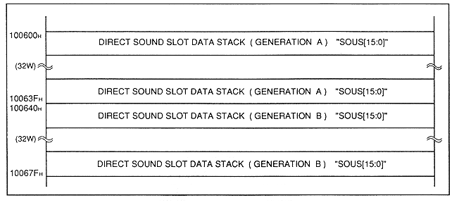

The sound data stack is an area for storing sound data. The sound data is composed of two generations (GENERATION A and B). Each generation can manage 32 sound data.
Figure 4.4 Sound data stack

Table 4.5 Sound Data Stack
| Name | Contents |
| SOUS | Sound Stack |